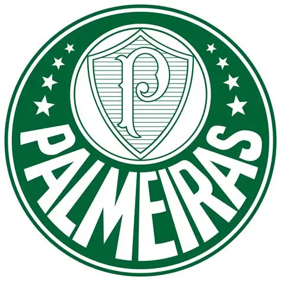

Tradição
Uma história construída desde 1914, com identidade, torcida e grandes momentos.
Explorar história →
PALMEIRASPORTAL ALVIVERDEConheça o clube, relembre conquistas e acompanhe conteúdos sobre o Palmeiras em um só lugar.
Conheça nossa históriaUma história construída desde 1914, com identidade, torcida e grandes momentos.
Explorar história →Veja a página dedicada aos jogadores e às posições do time.
Ver elenco →Relembre algumas das principais conquistas do Verdão.
Ver títulos →